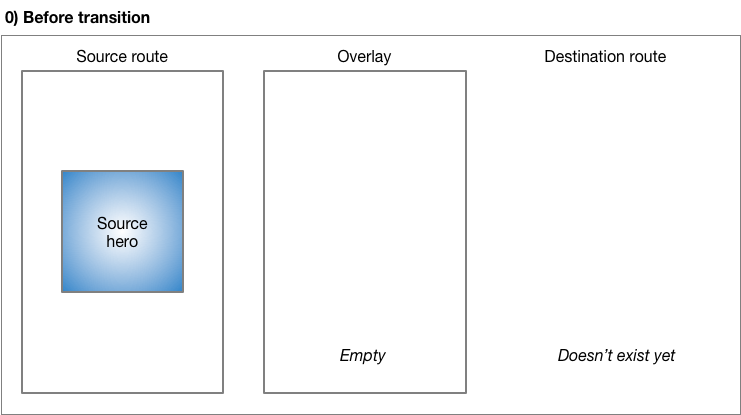
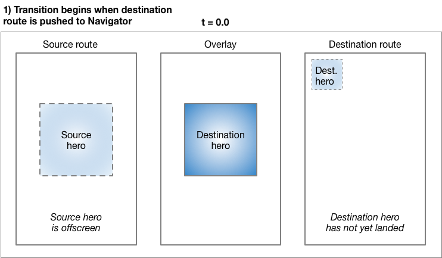
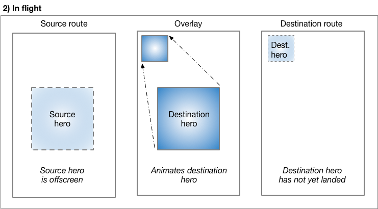
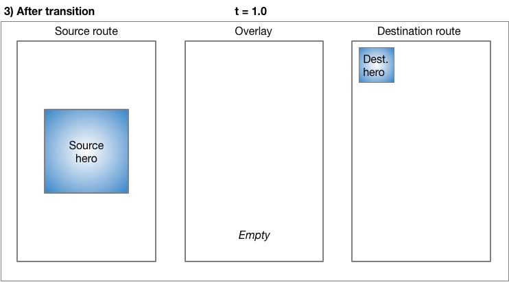
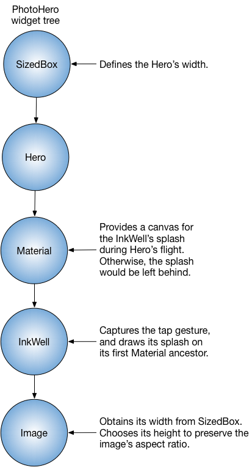
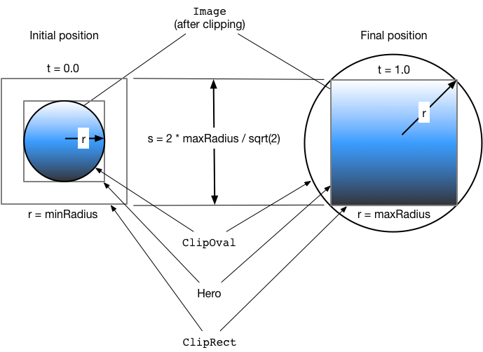
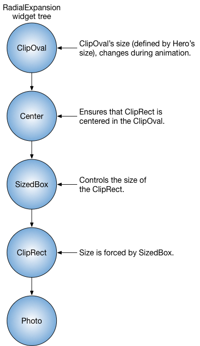

Hero Animations
What you’ll learn:
- The hero refers to the widget that flies between screens.
- Create a hero animation using Flutter’s Hero widget.
- Fly the hero from one screen to another.
- Animate the transformation of a hero’s shape from circular to rectangular while flying it from one screen to another.
- The Hero widget in Flutter implements a style of animation commonly known as shared element transitions or shared element animations.
You’ve probably seen hero animations many times. For example, a screen displays a list of thumbnails representing items for sale. Selecting an item flies it to a new screen, containing more details and a “Buy” button. Flying an image from one screen to another is called a hero animation in Flutter, though the same motion is sometimes referred to as a shared element transition.
This guide demonstrates how to build standard hero animations, and hero animations that transform the image from a circular shape to a square shape during flight.
- Basic structure of a hero animation
- Behind the scenes
- Standard hero animations
- Radial hero animations
- Resources
You can create this animation in Flutter with Hero widgets. As the hero animates from the source to the destination route, the destination route (minus the hero) fades into view. Typically, heroes are small parts of the UI, like images, that both routes have in common. From the user’s perspective the hero “flies” between the routes. This guide shows how to create the following hero animations:
Standard hero animations
A standard hero animation flies the hero from one route to a new route, usually landing at a different location and with a different size.
The following video (recorded at slow speed) shows a typical example. Tapping the flippers in the center of the route flies them to the upper left corner of a new, blue route, at a smaller size. Tapping the flippers in the blue route (or using the device’s back-to-previous-route gesture) flies the flippers back to the original route.
Radial hero animations
In radial hero animation, as the hero flies between routes its shape appears to change from circular to rectangular.
The following video (recorded at slow speed), shows an example of a radial hero animation. At the start, a row of three circular images appears at the bottom of the route. Tapping any of the circular images flies that image to a new route that displays it with a square shape. Tapping the square image flies the hero back to the original route, displayed with a circular shape.
Before moving to the sections specific to standard or radial hero animations, read basic structure of a hero animation to learn how to structure hero animation code, and behind the scenes to understand how Flutter performs a hero animation.
Basic structure of a hero animation
What’s the point?
- Use two hero widgets in different routes but with matching tags to implement the animation.
- The Navigator manages a stack containing the app’s routes.
- Pushing a route on or popping a route from the Navigator’s stack triggers the animation.
- The Flutter framework calculates a rectangle tween that defines the hero’s boundary as it flies from the source to the destination route. During its flight, the hero is moved to an application overlay, so that it appears on top of both routes.
Hero animations are implemented using two Hero widgets: one describing the widget in the source route, and another describing the widget in the destination route. From the user’s point of view, the hero appears to be shared, and only the programmer needs to understand this implementation detail.
Hero animation code has the following structure:
- Define a starting Hero widget, referred to as the source hero. The hero specifies its graphical representation (typically an image), and an identifying tag, and is in the currently displayed widget tree as defined by the source route.
- Define an ending Hero widget, referred to as the destination hero. This hero also specifies its graphical representation, and the same tag as the source hero. It’s essential that both hero widgets are created with the same tag, typically an object that represents the underlying data. For best results, the heroes should have virtually identical widget trees.
- Create a route that contains the destination hero. The destination route defines the widget tree that exists at the end of the animation.
- Trigger the animation by pushing the destination route on the Navigator’s stack. The Navigator push and pop operations trigger a hero animation for each pair of heroes with matching tags in the source and destination routes.
Flutter calculates the tween that animates the Hero’s bounds from the starting point to the endpoint (interpolating size and position), and performs the animation in an overlay.
The next section describes Flutter’s process in greater detail.
Behind the scenes
The following describes how Flutter performs the transition from one route to another.

Before transition, the source hero waits in the source route’s widget tree. The destination route does not yet exist, and the overlay is empty.

Pushing a route to the Navigator triggers the animation. At t=0.0, Flutter does the following:
-
Calculates the destination hero’s path, offscreen, using the curved motion as described in the Material motion spec. Flutter now knows where the hero ends up.
-
Places the destination hero in the overlay, at the same location and size as the source hero. Adding a hero to the overlay changes its Z-order so that it appears on top of all routes.
-
Moves the source hero offscreen.

As the hero flies, its rectangular bounds are animated using
Tween<Rect>,
specified in Hero’s
createRectTween property.
By default, Flutter uses an instance of
MaterialRectArcTween,
which animates the rectangle’s opposing corners along a curved path.
(See Radial hero animations
for an example that uses a different Tween animation.)

When the flight completes:
-
Flutter moves the hero widget from the overlay to the destination route. The overlay is now empty.
-
The destination hero appears in its final position in the destination route.
-
The source hero is restored to its route.
Popping the route performs the same process, animating the hero back to its size and location in the source route.
Essential classes
The examples in this guide use the following classes to implement hero animations:
- Hero
- The widget that flies from the source to the destination route. Define one Hero for the source route and another for the destination route, and assign each the same tag. Flutter animates pairs of heroes with matching tags.
- Inkwell
- Specifies what happens when tapping the hero.
The InkWell’s
onTap()method builds the new route and pushes it to the Navigator’s stack. - Navigator
- The Navigator manages a stack of routes. Pushing a route on or popping a route from the Navigator’s stack triggers the animation.
- Route
- Specifies a screen or page. Most apps, beyond the most basic, have multiple routes.
Standard hero animations
What’s the point?
- Specify a route using MaterialPageRoute, CupertinoPageRoute, or build a custom route using PageRouteBuilder. The examples in this section use MaterialPageRoute.
- Change the size of the image at the end of the transition by wrapping the destination’s image in a SizedBox.
- Change the location of the image by placing the destination’s image in a layout widget. These examples use Container.
What’s going on?
Flying an image from one route to another is easy to implement using Flutter’s hero widget. When using MaterialPageRoute to specify the new route, the image flies along a curved path, as described by the Material Design motion spec.
Create a new Flutter example and update it using the files from the GitHub directory.
To run the example:
- Tap on the home route’s photo to fly the image to a new route showing the same photo at a different location and scale.
- Return to the previous route by tapping the image, or by using the device’s back-to-the-previous-route gesture.
- You can slow the transition further using the
timeDilationproperty.
PhotoHero class
The custom PhotoHero class maintains the hero, and its size, image, and behavior when tapped. The PhotoHero builds the following widget tree:

Here’s the code:
class PhotoHero extends StatelessWidget {
const PhotoHero({ Key key, this.photo, this.onTap, this.width }) : super(key: key);
final String photo;
final VoidCallback onTap;
final double width;
Widget build(BuildContext context) {
return new SizedBox(
width: width,
child: new Hero(
tag: photo,
child: new Material(
color: Colors.transparent,
child: new InkWell(
onTap: onTap,
child: new Image.asset(
photo,
fit: BoxFit.contain,
),
),
),
),
);
}
}Key information:
- The starting route is implicitly pushed by MaterialApp when HeroAnimation is provided as the app’s home property.
- An InkWell wraps the image, making it trivial to add a tap gesture to the both the source and destination heroes.
- Defining the Material widget with a transparent color enables the image to “pop out” of the background as it flies to its destination.
- The SizedBox specifies the hero’s size at the start and end of the animation.
- Setting the Image’s
fitproperty toBoxFit.contain, ensures that the image is as large as possible during the transition without changing its aspect ratio.
HeroAnimation class
The HeroAnimation class creates the source and destination PhotoHeroes, and sets up the transition.
Here’s the code:
class HeroAnimation extends StatelessWidget {
Widget build(BuildContext context) {
timeDilation = 5.0; // 1.0 means normal animation speed.
return new Scaffold(
appBar: new AppBar(
title: const Text('Basic Hero Animation'),
),
body: new Center(
child: new PhotoHero(
photo: 'images/flippers-alpha.png',
width: 300.0,
onTap: () {
Navigator.of(context).push(new MaterialPageRoute<Null>(
builder: (BuildContext context) {
return new Scaffold(
appBar: new AppBar(
title: const Text('Flippers Page'),
),
body: new Container(
// The blue background emphasizes that it's a new route.
color: Colors.lightBlueAccent,
padding: const EdgeInsets.all(16.0),
alignment: Alignment.topLeft,
child: new PhotoHero(
photo: 'images/flippers-alpha.png',
width: 100.0,
onTap: () {
Navigator.of(context).pop();
},
),
),
);
}
));
},
),
),
);
}
}Key information:
- When the user taps the InkWell containing the source hero, the code creates the destination route using MaterialPageRoute. Pushing the destination route to the Navigator’s stack triggers the animation.
- The Container positions the PhotoHero in the destination route’s top-left corner, below the AppBar.
- The
onTap()method for the destination PhotoHero pops the Navigator’s stack, triggering the animation that flies the Hero back to the original route. - Use the
timeDilationproperty to slow the transition while debugging.
Radial hero animations
What’s the point?
- A radial transformation animates a circular shape into a square shape.
- A radial hero animation performs a radial transformation while flying the hero from the source route to the destination route.
- MaterialRectCenterArcTween defines the tween animation.
- Build the destination route using PageRouteBuilder.
Flying a hero from one route to another as it transforms from a
circular shape to a rectanglar shape is a slick effect that you
can implement using Hero widgets. To accomplish this,
the code animates the intersection of two clip shapes: a
circle and a square.
Throughout the animation, the circle clip (and the image) scales from
minRadius to maxRadius, while the square clip maintains constant
size. At the same time, the image flies
from its position in the source route to its position in the
destination route. For visual examples of this transition, see
Radial
transformation in the Material motion spec.
This animation might seem complex (and it is), but you can customize the provided example to your needs. The heavy lifting is done for you.
What’s going on?
The following diagram shows the clipped image at the beginning
(t = 0.0), and the end (t = 1.0) of the animation.

The blue gradient (representing the image), indicates where the clip
shapes intersect. At the beginning of the transition,
the result of the intersection is a circular clip
(ClipOval).
During the transformation,
the ClipOval scales from minRadius to maxRadius while the
ClipRect
maintains a constant size.
At the end of the transition the intersection of the circular and
rectangular clips yield a rectangle that’s the same size as the hero
widget. In other words, at the end of the transition the image is no
longer clipped.
Create a new Flutter example and update it using the files from the GitHub directory.
To run the example:
- Tap on one of the three circular thumbnails to animate the image to a larger square positioned in the middle of a new route that obscures the original route.
- Return to the previous route by tapping the image, or by using the device’s back-to-the-previous-route gesture.
- You can slow the transition further using the
timeDilationproperty.
Photo class
The Photo class builds the widget tree that holds the image:
class Photo extends StatelessWidget {
Photo({ Key key, this.photo, this.color, this.onTap }) : super(key: key);
final String photo;
final Color color;
final VoidCallback onTap;
Widget build(BuildContext context) {
return new Material(
// Slightly opaque color appears where the image has transparency.
color: Theme.of(context).primaryColor.withOpacity(0.25),
child: new InkWell(
onTap: onTap,
child: new Image.asset(
photo,
fit: BoxFit.contain,
)
),
);
}
}Key information:
-
The Inkwell captures the tap gesture. The calling function passes the
onTap()function to the Photo’s constructor. -
During flight, the InkWell draws its splash on its first Material ancestor.
-
The Material widget has a slightly opaque color, so the transparent portions of the image are rendered with color. This ensures that the circle-to-square transition is easy to see, even for images with transparency.
-
The Photo class does not include the Hero in its widget tree. For the animation to work, the hero wraps the RadialExpansion widget, which wraps the hero.
RadialExpansion class
The RadialExpansion widget, the core of the demo, builds the widget tree that clips the image during the transition. The clipped shape results from the intersection of a circular clip (that grows during flight), with a rectangular clip (that remains a constant size throughout).
To do this, it builds the following widget tree:

Here’s the code:
class RadialExpansion extends StatelessWidget {
RadialExpansion({
Key key,
this.maxRadius,
this.child,
}) : clipRectSize = 2.0 * (maxRadius / math.SQRT2),
super(key: key);
final double maxRadius;
final clipRectSize;
final Widget child;
@override
Widget build(BuildContext context) {</span>
return new ClipOval(
child: new Center(
child: new SizedBox(
width: clipRectSize,
height: clipRectSize,
child: new ClipRect(
child: child, // Photo
),
),
),
);
}
}Key information:
-
The hero wraps the RadialExpansion widget.
-
As the hero flies, its size changes and, because it constrains its child’s size, the RadialExpansion widget changes size to match.
-
The RadialExpansion animation is created by two overlapping clips.
-
The example defines the tweening interpolation using MaterialRectCenterArcTween. The default flight path for a hero animation interpolates the tweens using the corners of the heroes. This approach affects the hero’s aspect ratio during the radial transformation, so the new flight path uses MaterialRectCenterArcTween to interpolate the tweens using the center point of each hero.
Here’s the code:
static RectTween _createRectTween(Rect begin, Rect end) { return new MaterialRectCenterArcTween(begin: begin, end: end); }The hero’s flight path still follows an arc, but the image’s aspect ratio remains constant.
Resources
The following resources might help when writing animations:
- Animations landing page
- Lists the available documentation for Flutter animations. If tweens are new to you, check out the Animations tutorial.
- Flutter API documentation
- Reference documentation for all of the Flutter libraries. In particular, see the animation library documentation.
- Flutter Gallery
- Demo app showcasing many Material Design widgets and other Flutter features. The Shrine demo implements a hero animation.
- Material motion spec
- Describes motion for Material design apps.